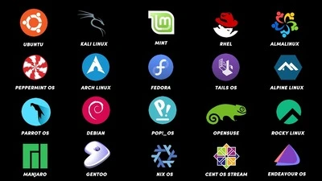
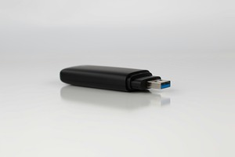

Het installeren van Linux
Dit artikel gaat over waarom en hoe je Linux moet installeren
Linux heeft veel voordelen vergeleken met andere bestuurssystemen (zoals macOS van Apple en Windows van microsoft). Op deze website ga ik je uitleggen waarom en hoe je Linux installeert op je laptop of PC.

Waarom Linux?
Linux heeft vele voordelen. Ik zal er hier een paar opnoemen.
Het is open-source.
Dat betekent dat het hele bersturingssysteem openbaar is. Dit maakt het betrouwbaarder aangezien je zelf alles kan lezen en zelfs aanpassen als je wil.Het kost bijna niks om te draaien.
De vereisten om (meeste) Linux distributies te draaien zijn extreem laag vergeleken met de alternatieven.Er zijn erg veel verschillende distributies waar je uit kan kiezen.
Bij Windows of macOS heb je alleen verschillende updates van bersturingssystemen (windows 7, 8, 10, 11, etc.). Bij Linux heb je veel verschillende distributies, je kan precies kiezen wat bij jouw situatie past.

Hoe installeer je Linux?
Linux installeren is makkelijker dan je denkt. Het is niet anders dan het installeren van Windows. Hier is een stappenplan:
1. Haal een USB-stick.
Voor meeste distributies is 16GB genoeg.
2. Download een ISO-bestand van je distributie van voorkeur.
Let wel op dat het moet passen bij je apparaat (let op x86, arm, amd/intel, 32-bit, 64-bit, etc.).
3. Flash het ISO-bestand op de USB-stick.
Dit kan met bijvoorbeeld Rufus.
4. Start het apparaat opnieuw op en ga naar de BIOS/UEFI.
Op meeste apparaat moet je om dat te doen een toets drukken tijdens het opstraten zoals Delete of F2.
5. Boot in de USB-stick via de BIOS/UEFI.
Lees de handleiding van je apparaat als je niet weet hoe dit moet.
6. Volg het installatieproces.
Hoe dit moet ligt aan je distributie maar meestal is het voorzelfsprekend.
